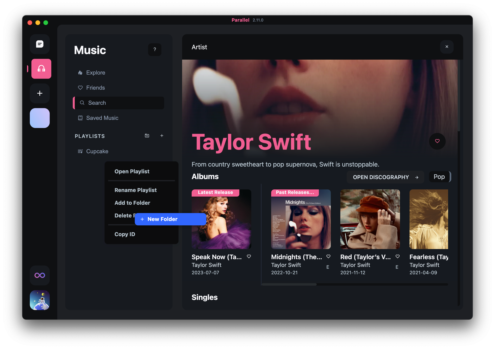
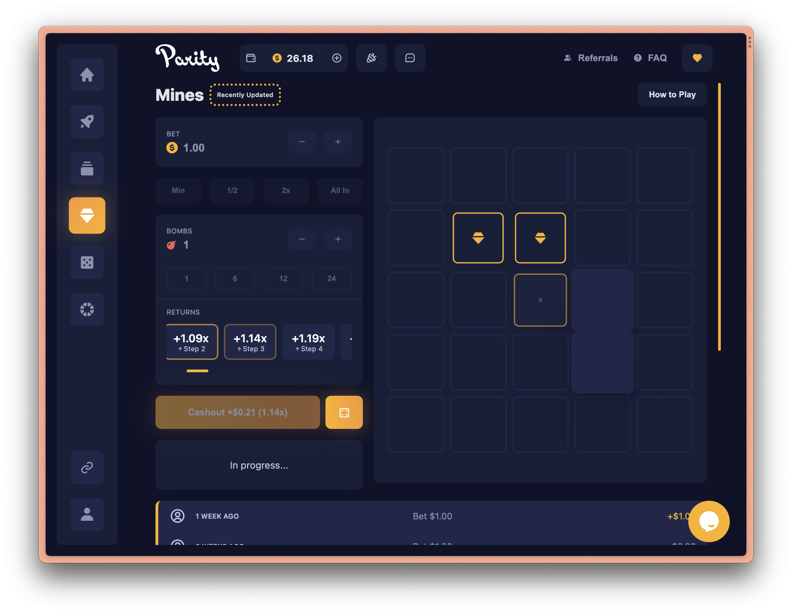
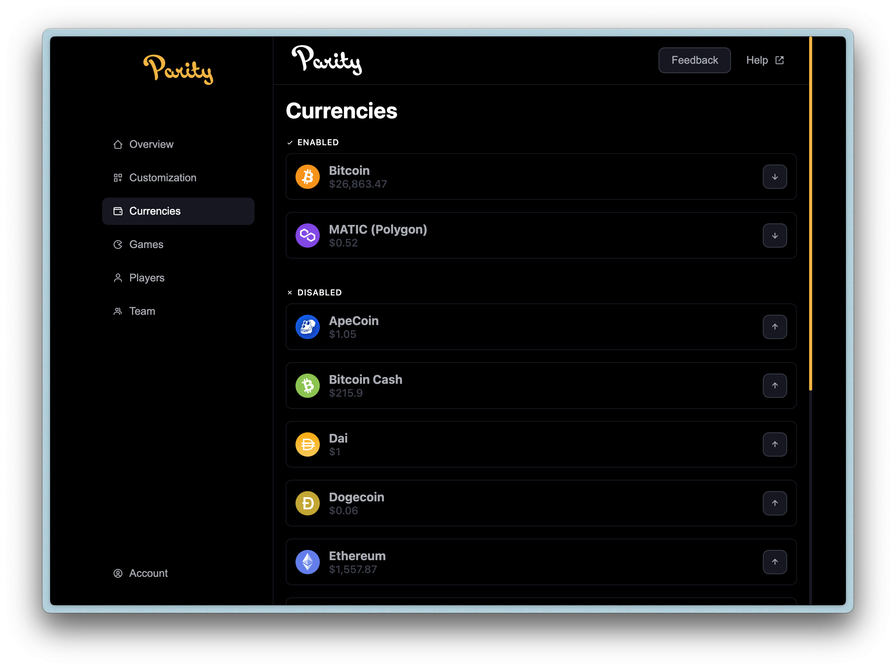
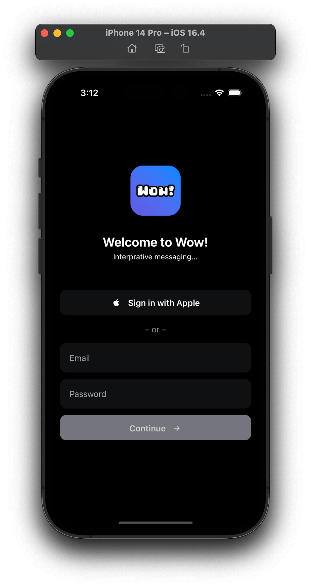
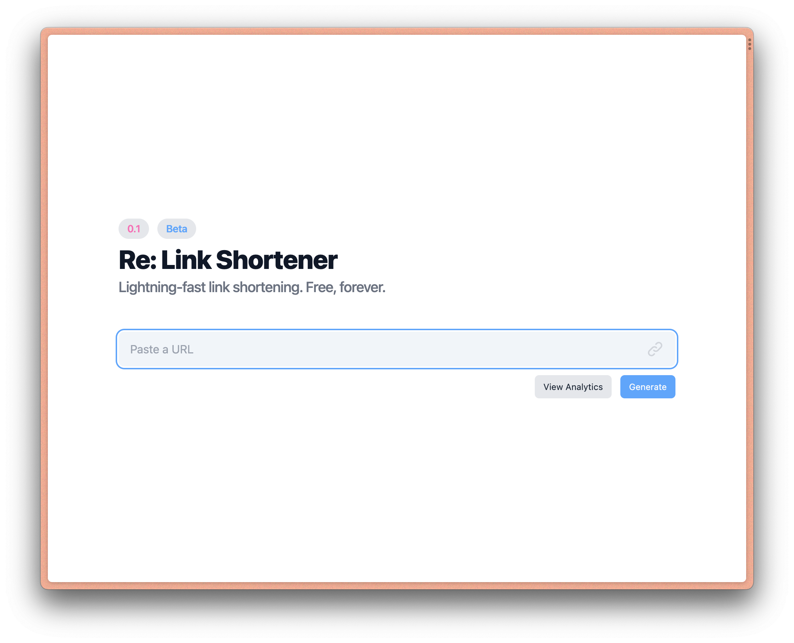
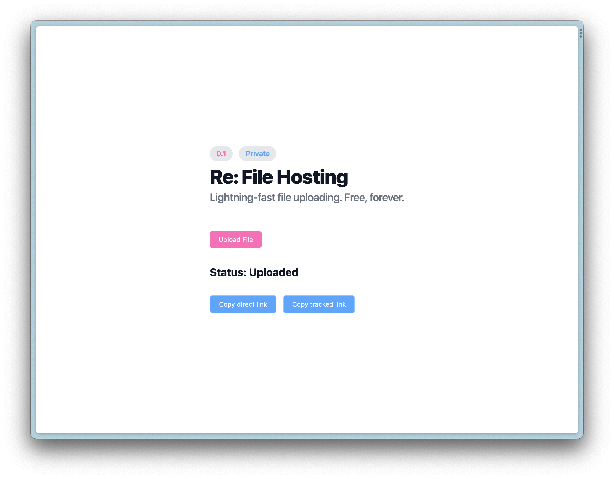
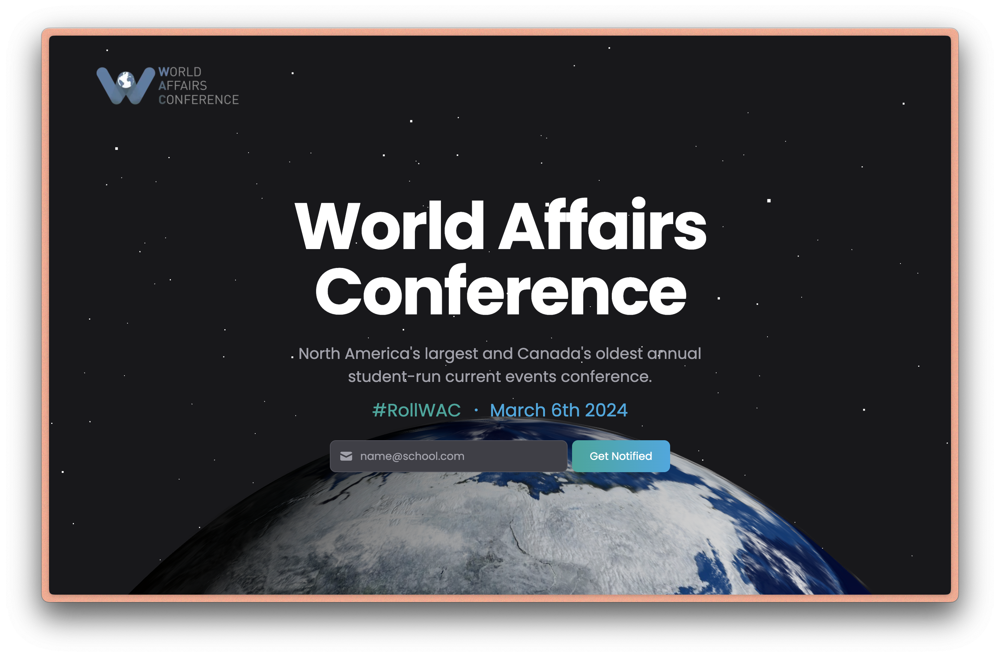
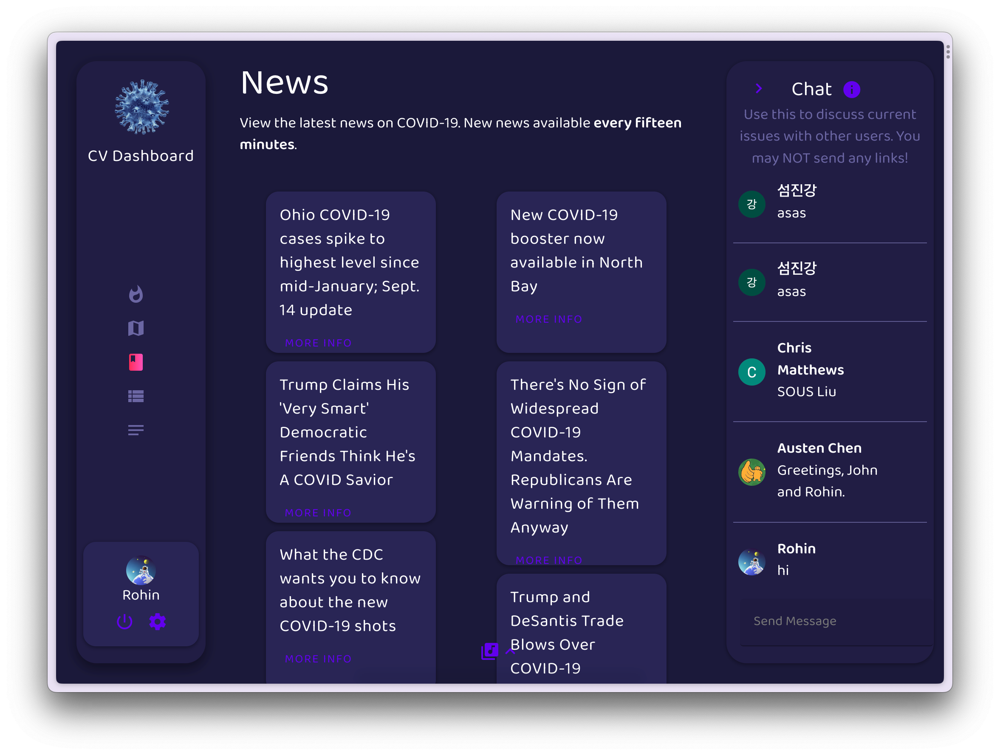

Welcome to my portfolio!


Parallel is a cross-platform desktop app I built in grade 11 with JavasScript, Firebase, Google Cloud Run, AWS, and Electron. The app includes group messaging, voice/video calls, and synced music playback. Music playback happens locally with a custom audio-fetching algorithm. I used the Stripe API to build a premium subscription feature.

Parity is a webapp built with JavasScript, Firebase, and GCP to run serverlessly using custom docker containers. The platform allows people to build and customize casino instances.

Wow! is an iOS app I build using Swift, Ionic, and CapacitorJS in 2023. The app is integrated into the OS with features like Sign in with Apple, scanning via QR Code, push notifications, and dark mode.

Re is a simple URL shortener and tracker I made with TailwindCSS and ViteJS in 2021. Recently, temporary file storage was added to made file transfers easy. Links, files, and analytics are stored securely with Firebase.

As Executive Head of Technology of the World Affairs Confernece, I oversaw the redesign of the public-facing website including the development of our custom registration system, Donna. On top of this work, the team created a redesigned, aesthetically-pleasing website, graphics and UI design to improve registrations and conversions.

As part of a Year 9 Coding project (2020), I created a COVID-19 dashboard, using public APIs to display data, with HTML, CSS, and JS. The original featureset included a live chat, embedded spread-map (GMaps API), and news feed.
Made with ❤️ by Rohin using the beautiful 7.css.